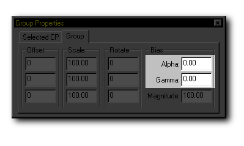

As control points are added, continuous splines are smoothly drawn through them. You can change the bias (the orientation of the bump) of the splines with the Alpha and Gamma controls. To change the bias of a spline, first select or group it. Exact Alpha and Gamma values can be entered directly into the fields on the Properties Panel Group tab.

An alternative way to change the bias of a spline is by clicking the Show Bias Handles button on the Manipulator Mode Toolbar. When this button is clicked, the selected control point has yellow handles that appear on it.

The Gamma bias of the spline can be changed by clicking and dragging the handles with the mouse while holding down the Shift key. The Gamma controls will adjust the bias in the same plane as the spline.
The Alpha bias of the spline can be changed by clicking and dragging the handles with the mouse while holding the Control key down. The Alpha button adjusts the bias in a plane perpendicular to the spline.
Bias values range from "-180" degrees to "180" degrees. Bias can be difficult to control until all splines that are going to share the control point have been added.
Related Topics:
Magnitude
Peak
Smooth